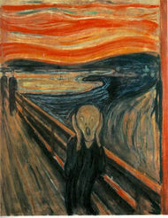

Spoiler
 De: La Frikipedia, la enciclopedia extremadamente seria.
De: La Frikipedia, la enciclopedia extremadamente seria.
Se le llama spoiler a cuando un hijo de puta (Tu hermano, el padre/madre de tu hijo, el hijo de tu mamá, el que escribió esto, etc) te cuenta una parte de algo que aun no has visto, te picas y lo matas, luego no te dan ganas de ver esa puta mierda por que ya te la contaron y te cagaron la maldita historia.
También se llama spoilers a los espaguetis caducados pero eso no tiene nada que ver.
Guía de spoileador novato
- Primera parte: adelantarse en la historia a aquel que queremos hacerle spoiler (esto no es totalmente necesario porque podemos inventárnoslo. Si la víctima se lo cree sufrirá igual que si fuera verdad).
- Segunda parte: hay que elegir una forma de contárselo. Ofrecemos varias opciones:
- Contándoselo directamente: El metodo más fiable, hay un 80% de posibilidades de que te escuche. El problema es que también hay un 100% de posibilidades de llevarte una paliza.
- Mandándoselo como SMS: hay un 50% de posibilidades de que lo vea y aún en caso de que lo viese tendría que descifrarlo... Ejemplo: l pdr d ichigo s shngmi. Por lo cual es difícil que haga efecto.
- Diciéndoselo por mesenller o chat: hay que decirlo de sopetón y solo una vez (pero esa vez que sea un spoiler gordo) ya que a la segunda ya te han quitado la admisión del msn. Es importante no avisar. Ejemplo: Chico 1: ¿Tú irás al la fiesta del sábado? Chico 2: Sí, ¿y tú? Chico 1: Pues Iruka es en realidad hermano de Naruto Uzumaki. ¡Zas, en toda la boca! Este chico es un auténtico maestro del spoiler, sí señor.
- Escribiéndolo en el youtube como comentario del primer vídeo de la serie: todo un clásico aunque con pocas posibilidades de ser leído. Se debe poner todo el spoiler posible siempre poniendo delante el más gordo (así aunque la víctima deje de leer después de ver el primero ya le habremos destripado media historia).
- Decirlo desde una terraza con un altavoz muy potente (de preferencia con el de sho minamimoto): No es mala idea te escucharía mucha gente... el problema es que luego todos irían a por ti con lo cual acabarías cadáver, si sobrevives sho minamimoto te va a a matar por robarte su megafono; en cualquier caso, no hay forma de salir con vida (a menos que seas Diox)
- Tatuártelo en la frente: todos los que te viesen lo acabarian leyendo más tarde o más temprano. Pero claro también te meterían una paliza (ademas te quedarías toda la vida con un spoiler tatuado en la frente).
- Mandarlo en un mensaje a todos tus contactos del Messenller: variante del 3º mucho más efectiva. Todo el mundo lee sus mensajes de vez en cuando ¿no?
- Escribirlo en un urinario público: como mínimo es original y ademas efectivo. Todo el mundo tiene que hacer sus necesidades alguna vez (conseguirás más alcance si te compinchas con alguien de otro sexo que lo escriba en los otros urinarios) pero no todos se paran a leer las gilipolleces que escriben otros...
- Gritarlo mientras practicas el sexo: problema: para que esto funcione hay que practicar el sexo. Así que para los frikis y/o otakus es
imposible difícil ponerlo en práctica.
- Gritarlo en el cine y salir por patas: no es mala idea... ¿Pero salir por patas del cine con lo cara que cuesta la entrada? Bueno, siempre podrías contárselo a los que esperan en la fila.
- Decirlo en el telediario y que se entere toda Espiña: el spoiler más viejo del mundo todos lo hemos hecho alguna vez... ¿Cómo? ¿Que tú no? ¿Y a qué esperas?
- Ponerlo en la Frikepedia: Al final de la página hay una sección donde te podrás hacer spoiler sin peligro de palizas, pero con un 100% de probabilidad de que se caguen en tu madre, este método es recomendable, si no te importa que se caguen en tu madre.
- Tercera parte: hacerlo, lógicamente, si no te habrías leído todo este rollo para nada...
- Cuarta parte: en caso de utilizar las opciones que requieren que lo digas personalmente (o si te encuentras con las víctimas de cualquiera de las otras) la cuarta parte consiste básicamente en correr como un loco.
Recomendaciones para que no te hagan spoiler
- Pártele la boca.
- Quítale la admisión del Messenller.
- Dile antes de que lo cuente, "Si eres noob apenas vas por alli, haha".
- Tápate los oidos (Nunca sirve siempre terminas escuchando).
- Ve corriendo por la calle tapándote los oidos y pegando gritos a intervalos de uno o dos segundos.
- Ponte una pierna detrás de la cabeza y sube a un elefante verde volador (Esta ultima solo funciona despuás de ingerir grandes cantidades de Alcohol).
- Partele las manos, para que no escriba
- Para ser mas efectivo, realiza todas estas cosas en un intervalo de 3H/min por seg. Y te saldra un gato que te dira "Colega, te has cargado el tiempo!!!"
- Torturalo contandole tu un spolier, pero despues suicidate, ya que tu te has convertido en un spoiler y no mereces vivir.
- Apaga el ordenador, y vive una vida sana. Al menos has cerrado una de las principales vias de transmision spoilera.
- Encierrate en una camara sin sonido, ni luz, ni electricidad, con toda la comida necesaria para vivir, asi ya no te llegaran spoilers, aparte de que no te llegara nada mas
por gilipollas y homosexual.
Spoilers famosos
Advertencia: si lees esto puedes arrepentirte para el resto de tus días. ¿Estás seguro de que quieres hacerlo?
- Luke Skywalker es el abuelo de Darth Vader.
- En silent hill 2 james mato a mary y despues la mata otra vez y luego se mata el tirandose al agua
- La serie de Naruto acabara cuando Sakura los mate a él y a Sasuke por pillarlos liándose entre ellos.
- IP anónima es Tobi
- El padre de Naruto no es el cuarto sino Kyubi, el zorro de nueve colas.
- One piece no acabara nunca porque cuando lleguen a grand line descubrirán que todo era un montaje de Gold D. Roger que en realidad no estaba muerto.
- Hei de Darker Than Black NO es Contratista
- En GTA San Andreas CJ mata a Ryder y a Big Smoke
- Vincent (Ergo Proxy) en Realidad es Un Proxy
- The Force Unleashed
- En Futurama Fry jamas vuelve al siglo XX.
- Habrá un High School Musical 5 en 2016
- Naruto Shippuden termina en 2016, y comenzara otro nuevo.
- En Code Geass Al Final Muere Lelouch (Lo mata Suzaku).
- En Paranoia Agent todo era producto de la imaginación de las personas.
- Destino final 5 es la precuela de Destino Final.
- En el capítulo final de la cuarta temporada de House zorra implacable muere, mas tarde, en la quinta temporada, House y wilson vuelven a ser amigos despues de que House le quite un cacho de carne a su padre en el funeral para hacerse una prueba de paternidad con el muerto. Ah, y House se vuelve loco.
- Al final de MD House, el Dr. House no muere.
- Doraemon es producto de la imaginación de Nobita, quien en realidad está en coma debido a un accidente de coche que también mató a sus padres.
- En Silent Hill Homecoming Alex mata a Josh
- En el sexto sentido el niño tiene diarreas mentales y se imagina que habla con Bruce Willis.
- En los Simpsons Lisa cumple 8 años 2 veces.
- En iCarly dicen 23.543 palabras mexicanas (Que el resto de Latinoamerica no entiende) cada episodio
- Chavez regala petroleo
 Así quedan los que oyen un spoiler
- Walt Disney no está congelado, sino incinerado.
- Dentro de 70 años morirás.
- Dios no existe, son los padres.
- Al final de Lost, Kate se lía con Sawyer, y todos salen de la isla, menos Locke.
- Aeris está viva y vive en Mallorca
- Bart de Los Simpsons aprueba dos vecez para pasar a cuarto grado. Sin reprobar.
- Todo pais que no tiene un McDonald's ataca a E.U.U*
- Pokemon nunca terminara y no morirá ninguno de sus protagonistas ya que son inmortales y seguirán vivos aún después de que tus nietos mueran de sida.
- Futurama no tiene fin porque lo cancelan.
- Harry Petas mata a Lord Voldemort
- Jiraiya se muere en el capitulo 89 de Naruto Sipueden por causa de un infarto, cuando se entera que Tsunade era hombre.
- En Saw, el asesino era el cadaver que estaba en medio de la habitación, el doctor huye cortándose un pie y Adam se queda encerrado (luego lo matan).
- En la pelicula La Aldea, los innombrables son solo gente del pueblo disfrazada para que los habitantes de esta no se escapen hacia la ciudad
- Evangelion termina con que matan a todos los angeles, shinshi se cura de sus problemas existenciales y el eva01 se conbierte en angel y mata a toda la humanidad.
- En High Scool of The Dead Khota Mada a Azami (Manga)
- En Clannad Nagisa Muere...
- Reiv de evangelion no es un humano, solo es una especie de clon de eva.
- Los evas son clones de los angeles y las armaduras que tienen no son blindaje, sino que son ataduras para que no se liberen y sean angeles.
- Los reyes magos (y su compinche papá noel) nos engañan, los padres no existen.
- En Death Note, Light mata a L a las mitad de la serie.
- Light muere por escribir accidentalmente para un examen su nombre real en una hoja del Death Note.
- Matt muere por una lluvia de balas.
- Near siempre fue mujer.
- Chad de Bleach en realidad es un hollow o hueco o como mierda le digan en la traduccion en la que la veas.
- Jack Bauer muere en la 7º temporada de 24.
- Matan a Sub Zero en Mortal Kombat.
- Two and a Half Men acaba en que Chuck Lorre pierde interes en la serie y hace Jake, Alan y Walden.
- En el Half-Life, Gordon Freeman termina trabajando para G-man
- Piratas del caribe termina con que shack esparrow muere.
- Los Jedis de star wars no son bunos, solo son un simbiote de jebis de las galaxias lejanas.
- En Jekyll muere Mr. Hyde, y el padre de Tom no es Jekyll y la madre de Tom es la mala.
- IP anónima muere al resbalar con una Mierda del suelo
- No mojaras en tu vida por mucha ilusión que te haga
- A IP anónima se lo come Naruto, que se lo come Sasuke, que se lo come Super Mario, que se lo come IP anónima, y todo esto tiene mucho sentido.
- Al final de Watchmen el tio azul que no para de enseñar el pepinocio se peta brutalmente a Rorschach y lo mata.
- Mientras a mi se me come Naruto yo me cago en todos los muertos del director de la serie.
- En Inception todo era un sueño.
- Al final del super Mario, la princesa se queda con Ash, el protagonista de Evil Dead.
- El Coyote se come al Correcaminos.
- En Half Life (HL) Todo es Un Sueño de Gordon Freeman Quien Está en Coma Terminal Debido a la Frecuencia de Resonancias por que no llevaba el casco.
- Opposing Force tambien es parte del Sueño De Freeman y Sheppard en Realidad no Existe ya que es la Parte Agresiva de Freeman (._.)
- En El retorno del jedi Darth Vader muere siendo bueno.
- A El Chavo sin querer queriendo.
- En soul eater aparece Lenalee y mata atodos.
- Marty McFly une a George McFly y Lorreine al final de Volver al Futuro.
- En bleach resulta que Nell (La pequeña arrancar) es un Ex Espada (Bien Buena) que mata a todos y despues se vuelve a hacer chiquita.
- Al final de la peli de Cry Wolf resulta que Dodger utliza a toda la pandilla para asi manipular a Owen para que matase al Prof. Rich Walker porque mientras tenia una relacion con Dodger tenia otra aventura con la estudiante muerta del principio de la peli a la que mato Dodger y la pelicula acaba contando todo la historia y despues de contarla en el final Dodger medio llorando dice. -Y si fuese asi :3, ¿Quien te iba a creer?! =El -.(Que por cierto el Prof. es Jon Bon Jovi)
- a Sacro Imperio Romano de hetalia, lo mato el estudio DEEN
- Los mangas son mucho mas degenerados y sangrientos que sus animes hominidos.
- Si Len muere es culpa de Rin, si Rin muere es porque tiene mala leche.
- Hatsune Miku es mas sobrevalorada que Hinata Hyuuga
- Kenny es inmortal y el lo sabe.
- Dentro de poco unos canis te pegaran una paliza.
- Al Final de Gta 5 Tienes que matar a Michael O a Trevor.
- En Sinsajo (Los Juegos del Hambre)Prim Muere...
- ...y Finnick tambien.
- John Cena gana el titulo de la WWE
- En los Juegos del Hambre Sinsajo Parte 2 muere la hermanita de Katniss y ésta última mata al presidente Snow en lugar de a la presidenta del distrito 13.
- la madre de IP anónima es la madre de IP anónima.
- Después de morir, no vas al cielo ni al infierno, solo despiertas.
- En la Sangre del Olimpo (Percy Jackson), Octavio muere y va al infierno de los ositos de peluche.
Bueno y ahora que me han jodido os he jodido la historia podéis cagaros en mi madre y en la de IP anónima (Y como verás, muchas cosas de esta lista se han cumplido)
Autor(es):
- Krusher
- Fordus
- Doctor grijander
- Frikiman
- Aque
- Viento
- Guilfer
- Khazike Khashondo
- ElInventor
- Nada2
Frikipedia 2005-2016, Licencia
GFDL 1.2 - Extraído por FrikiLeaks